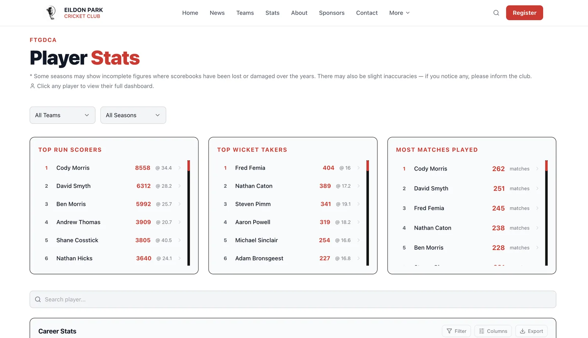
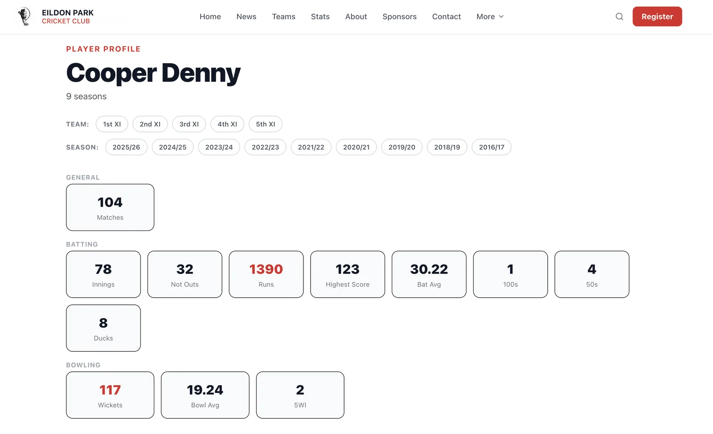
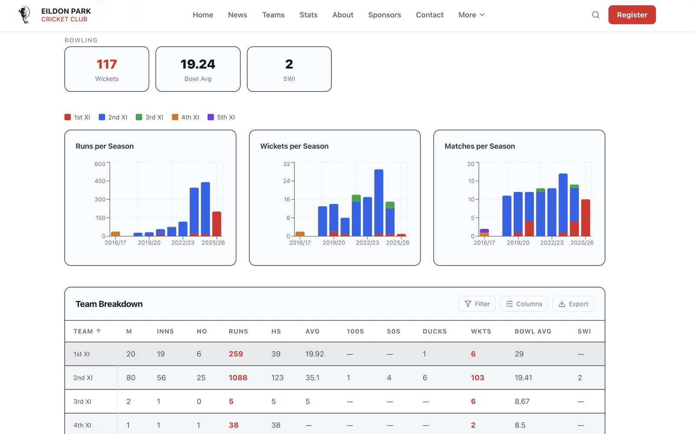

What’s in the dashboard



How the data works
The hard part wasn’t the website. It was the data. Historical statistics came from club records spanning many seasons, in inconsistent formats. I cleaned and standardised them into a single season-by-season structure for batting and bowling, so every number on the site is derived rather than maintained:
- All-time records for individual players across batting and bowling.
- Career aggregates and averages, recalculated from the underlying data.
- Season-by-season breakdowns for every player.
- Club record holders across the key statistical categories.
Adding a new season means adding that season’s data. The leaderboards, profiles and records follow automatically.
Built with Claude Code
I built the whole site with Claude Code as my primary development tool. It took the project from first design to a production site deployed on Netlify, as a solo volunteer project. It’s a practical example of AI-assisted development getting a real community project shipped quickly, with the data work, not the boilerplate, getting the attention.